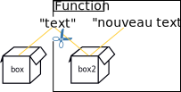
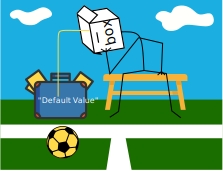

HTML, CSS et JS
HTML
La structure de la page
Définition du contenu

HTML, CSS et JS
CSS
Spécifie le design
- L’organisation de la structure (layout)
- Le style des éléments (couleurs, décorations, tailles...)

HTML, CSS et JS
JS (Javascript)
La logique dans la page
- Algorithme côté client
- Interaction avec l’utilisateur (boutons, formulaires)
- Interaction avec le navigateur
Historique
Langage de script créé en 1995 (Netscape)
Marque déposé de Sun Microsystems, Oracle maintenant


Historique
Inspiré par Java et Python
- Style Java
- Facilité d'écriture de code du python
Historique
Exécution côté client
Ajoute du dynamisme dans les pages
- Interactions utilisateurs, animations
- Aide à la navigation
- Traitement côté client
- Requêtes asynchrones
Organisation des systèmes informatiques - CPU
Central Processing Unit (CPU) est le cerveau de l'ordinateur

Introduction à l'informatique - Bits
L'unité de base de la mémoire est appelée bit. Il peut être soit 0 soit 1
Introduction à l'informatique - Bits
Pourquoi binaire, pourquoi pas Quaternaire?
Introduction à l'informatique - Rappel du système décimal
Introduction à l'informatique - Byte
Introduction à l'informatique - Mémoire
Toutes les données d'un ordinateur sont stockées dans des séquences de 0 et de 1.

Introduction à l'informatique - Adresse de la mémoire
Algorithme - Pizza exemple
- Préchauffer le four à 500 degrés et y mettre la pierre.
- Sortez la pâte de blé entier de TJ's.
- Farinez-la et roulez-la
- Puis brosser avec de l'huile d'olive et une solide poussière de farine de maïs.
- Retirez la pierre
- Retournez la croûte sur elle
- Faire cuire pendant environ cinq minutes
- Retirez-le
- Percez les bulles
- Mettez plus d'huile d'olive sur le dessus.
- Puis les garnitures: Huile d'olive, tapenade d'olives, ail frais, champignons, oignons, basilic frais, de la mozzarella en tranches et une pile d'anchois.
- Faites cuire pendant encore 10-15 minutes
- Retirez-le avec votre palette à pizza et prenez-le en photo
- Offrez une tranche à votre invité, en priant pour qu'il ait déjà mangé.
- Consommez-le avec une bonne bouteille de vin rouge bon marché tout en gérant vos nombreuses émotions.
Algorithme - The martingale strategy/Algorithme
- Commence avec 1€ de mise
- Place ta mise sur le noir ou le rouge
- Laissez tourner la roue
- Si vous perdez, doublez la dernière mise et retournez à l'étape 2
- Si vous gagnez, prenez votre dernière mise et l'argent gagné, recommencez au début de 1€ et retournez à l'étape 2
Case Sensitivity
JavaScript est un langage sensible à la casse. Cela signifie que les mots-clés du langage, les variables,
noms de fonctions et autres identifiants doivent toujours être tapés avec une majuscule cohérente.
lettres.
Comments
Les commentaires donnent des informations aux personnes qui lisent votre code. JavaScript prend en charge deux styles de commentaires.
Tout texte entre un // et la fin d'une ligne est traité comme un commentaire et est ignoré par JavaScript.
Tout texte entre les caractères /* et */ est également traité comme un commentaire.
Exemple:
// This is a single-line comment.
/* This is also a comment */
// and here is another comment.
/*
* This is yet another comment.
* It has multiple lines.
*/
Literals
Un littéral est une valeur de données qui apparaît directement dans un programme.
12 // Le nombre douze
1.2 // Le nombre un virgule deux
"hello world" // Une chaîne de caractères
'Hi' // Une autre chaîne de caractères
true // Une valeur booléenne
false // L'autre valeur booléenne
null // Absence d'objet
Les détails complets sur les types de données apparaissent plus loin dans la présentation
Variables
Une variable est simplement une zone de stockage.
Vous placez des éléments dans vos zones de stockage (variables)
afin de pouvoir les utiliser et les manipuler dans vos programmes.
Variables
Une variable est le nom d'une cellule de mémoire.
Elle est dite "variable" car la valeur contenue dans la cellule peut changer.
Chaque cellule de mémoire a une adresse.
Declaration
Avant d'utiliser une variable dans un programme JavaScript, vous devez la déclarer. Les variables sont déclarées avec le mot-clé var
Vous pouvez également déclarer plusieurs variables avec le même mot-clé var
Et vous pouvez combiner la déclaration de variable avec l'initialisation de variable.
Les détails complets sur les types de données apparaissent plus loin dans la présentation
var message = "hello";
var i = 0, j = 0, k = 0;
Declaration - let
La manière la plus simple d'utiliser let est un simple remplacement à la place de var
Les variables définies avec let ne peuvent pas être redéclarées.
Vous ne pouvez pas redéclarer accidentellement une variable.
Avec let, vous ne pouvez pas faire ceci
let x = "John Doe" ;
let x = 0 ; // Erreur de syntaxe : 'x' a déjà été déclaré.
Avec var, vous pouvez :
var x = "John Doe";
var x = 0;
Declaration - Block scope and let
Cette scope restreint l'accès à la variable déclarée à l'intérieur d'un bloc spécifique par les personnes extérieures à ce bloc.
Le mot-clé let facilite la mise en place d'une scope de bloc pour les variables
{
let x = 2 ;
}
// x ne peut PAS être utilisé ici
{
var x = 2 ;
}
// x PEUT être utilisé ici
let x = 10 ;
// Ici, x est 10
{
let x = 2 ;
// Ici, x est 2
}
// Ici, x est égal à 10
Declaration - const
Les constantes sont comme les variables, sauf que les affectations à ces dernières sont ignorées
(la tentative de modifier une constante ne provoque pas d'erreur) et les tentatives de les redéclarer provoquent des erreurs
const pi = 3.14 ; // Définit une constante et lui donne une valeur.
pi = 4 ; // Toute affectation future à cette constante est ignorée en silence.
const pi = 4 ; // C'est une erreur de redéclarer une constante.
var pi = 4 ; // C'est également une erreur.
Le mot-clé const se comporte fondamentalement comme le mot-clé var
Statements
Les instructions (statements) sont des phrases ou des commandes JavaScript.
Tout comme les phrases françaises sont terminées et séparées les unes des autres par des points,
les instructions JavaScript sont terminées par des points-virgules.
Les instructions sont exécutées pour que quelque chose se produise
var hello = "Hello, world";
myfunc(42, "O'Reilly");
var a = 1;
var name = "Elphaba";
var b = a / 25.0;
if (a == b) { console.log(a); }
Une instruction composée qui utilise des accolades pour marquer un bloc de code,
tel qu'un test conditionnel ou une boucle, n'a pas besoin de point-virgule
après l'accolade fermante.
Data Types - Integers
Dans un programme JavaScript, un nombre entier en base 10 est écrit sous la forme d'une séquence de chiffres. Par exemple
var zero = 0;
var three = 3;
var zehnmillionen = 10000000;
Outre les littéraux entiers en base 10, JavaScript reconnaît les valeurs hexadécimales (base 16).
Un littéral hexadécimal commence par "0x" ou "0X", suivi d'une chaîne de chiffres hexadécimaux.
var number1 = 0xff; // 15*16 + 15 = 255 (base 10)
var number2 = 0xCAFE911; //212855057
Les nombres entiers octaux existent également en JavaScript (exemple : 0377).
Certaines implémentations JavaScript prennent en charge les littéraux octaux, d'autres non. Vous ne devez donc jamais l'utiliser.
Data Types - Integers
Exercice : Ecrivez un programme en JavaScript pour échanger deux nombres

//Example:
var a = 39, b = 25
//après échange
//a = 25, b = 39
console.log(a);
console.log(b);
Data Types - Integers
Console.log affiche un message sur la console web
Data Types - Integers
Solution:
//exemple simple
var a = 39;
var b = 25;
var third = a;
a = b;
b = third;
console.log("variable a=" +a+ " ,variable b=" +b);
//exemple plus complexe
a = 45;
b = 105;
a=a+b;
b=a-b;
a=a-b;
console.log("variable a=" +a+ " ,variable b=" +b);
Data Types basic - Floating-Point
Les types de données à virgule flottante peuvent avoir un point décimal ; ils utilisent la syntaxe traditionnelle des nombres réels.
Une valeur réelle est représentée par la partie intégrale du nombre, suivie d'un point décimal et de la partie fractionnaire du nombre
Les littéraux à virgule flottante peuvent également être représentés à l'aide de la notation exponentielle : un nombre réel suivi de
la lettre e (ou E), suivi d'un signe plus ou moins facultatif, suivi d'un exposant entier.
Cette notation représente le nombre réel multiplié par 10 à la puissance de l'exposant
//Notation simple
3.14
2345.789
.333333333333333333
//Notation scientifique/exponentielle
6.02e23 // 6.02 × 1023
1.4738223E-32 // 1.4738223 × 10-32
Opérateurs arithmétiques
Les opérateurs arithmétiques sont des opérateurs que vous reconnaîtrez dans l'usage quotidien.

| Opérateur |
Exemple |
Explications |
=
|
var salary = 2800; |
Assignation/Affectation |
| + |
var salary = salary + 2800 |
Addition/Concaténation |
| - |
var salary = salary - 2800 |
Soustraction |
| * |
var salary = salary * 2800 |
Multiplication |
| / |
var salary = salary / 2800
|
Division
|
| % |
var salary = salary % 1000 |
Modulo, reste de la division entière |
Opérateurs arithmétiques
Exercice: Calcule le salaire mensuel si ton salaire brut en tant que développeur est de 32000€ par an
(réaliste dans la région de Toulouse après la formation).
Le salaire net est d'environ 75% du salaire annuel.
Opérateurs arithmétiques
Calcule le salaire mensuel
Opérateurs arithmétiques
Exercice: Il est actuellement minuit.
Quelle heure sera-t-il après 40 heures passées sur une horloge de 12 heures ?
Utilisez l'opérateur modulo % pour calculer l'heure
Opérateurs arithmétiques
Solution pour l'exo modulo:
var hours = 40;
var clock = 12;
var time = 40%12;
console.log("it is "+time+" o'clock");
Y a pas mieux que l'exercice sur l'horloge pour comprendre les modulos et les ensembles finis ordonnés
Data Types - Strings
Les Strings (chaînes de caractères) sont le type de JavaScript pour représenter du texte.
Pour inclure une string dans un programme JavaScript, il suffit de placer les caractères
de la string entre une paire de guillemets simples ou doubles (' ou ")
var str = ""; // La chaîne vide : elle ne contient aucun caractère
str = 'testing';
str = "3.14";
str = 'name="mon formulaire"';
str = "π est le rapport entre la circonférence d'un cercle et son diamètre";
Data Types - Escape Sequences in String
Le caractère backslash (\) a une fonction particulière dans les strings JavaScript.
Combiné avec le caractère qui le suit, il représente un caractère qui n'est pas autrement représentable dans le string.
| Sequence |
Caractère représenté |
| \0 |
Le caractère NUL (\u0000) |
| \b |
Retour en arrière (\u0008) |
| \t |
Horizontal tab (\u0009) |
| \n |
Nouvelle ligne(\u000A) |
| \v |
Onglet vertical(\u000B) |
| \f |
Form feed (\u000C) |
| Sequence |
Caractère représenté |
| \r |
Retour à la ligne (\u000D) |
| \" |
Guillemets doubles (\u0022) |
| \' |
Apostrophe ou Guillemets simples (\u0027 |
| \\ |
Backslash (\u005C) |
| \x XX |
Le caractère Latin-1 spécifié par les deux chiffres hexadécimaux XX |
| \u XXXX |
Le caractère Unicode spécifié par les quatre chiffres hexadécimaux XXXX |
Data Types - Strings
Exercice : Assignez la phrase de l'exercice à une variable (var text) et imprimez-la avec console.log(text);
Phrase: "j'adore" tellement Perl que je n'arrive pas à y croire! Le meilleur langage de programmation au monde, je vous le jure ;)\
#Perl example:
@P=split//,".URRUU\c8R";@d=split//,"\nrekcah xinU / lreP rehtona tsuJ";sub p{
@p{"r$p","u$p"}=(P,P);pipe"r$p","u$p";++$p;($q*=2)+=$f=!fork;map{$P=$P[$f^ord
($p{$_})&6];$p{$_}=/ ^$P/ix?$P:close$_}keys%p}p;p;p;p;p;map{$p{$_}=~/^[P.]/&&
close$_}%p;wait until$?;map{/^r/&&<$_>}%p;$_=$d[$q];sleep rand(2)if/\S/;print
Perl a été conçu par Larry Wall qui a étudié la linguistique. MDR (la linguistique est l'étude scientifique du langage)
Data Types - Strings
Échapper la chaîne de caractères
Data Types - String - Concatenation
L'une des fonctions intégrées de JavaScript est la possibilité de concaténer des chaînes de caractères.
Si vous utilisez l'opérateur + avec des nombres, il les additionne. Mais si vous utilisez cet opérateur
sur des chaînes de caractères, il les joint en ajoutant la seconde à la première
var msg = "Hello, " + "world"; // Produces the string "Hello, world"
var greeting = "Welcome to my blog," + " " + name;
Data Types - Booleans
Une valeur booléenne représente la vérité ou la fausseté, on ou off, oui ou non. Il n'y a que deux valeurs possibles de ce type.
Les mots réservés true et false évaluent ces deux valeurs
Data Types - Booleans
Les valeurs suivantes se convertissent en, et donc fonctionnent comme, false. Toutes les autres valeurs sont converties en, et fonctionnent comme, true
Data Types - null et undefined
null est un mot-clé du langage qui est évalué à une valeur spéciale,
généralement utilisée pour indiquer l'absence d'une valeur
JavaScript possède également une deuxième valeur qui indique l'absence de valeur.
La valeur undefined représente un type d'absence plus profond.
Arrays
Un tableau (array) est une collection ordonnée de valeurs. Chaque valeur est appelée un élément,
et chaque élément a une position numérique dans le tableau, appelée son index. Les tableaux
JavaScript sont non typés : un élément de tableau peut être de n'importe quel type, et
différents éléments d'un même tableau peuvent être de types différents.
Les éléments d'un tableau peuvent même être des objets ou d'autres tableaux, ce qui permet
de créer des structures de données complexes, telles que des tableaux d'objets et des tableaux de tableaux.
Creating Arrays
La façon la plus simple de créer un tableau est d'utiliser un littéral de tableau,
qui est simplement une liste d'éléments de tableau séparés par des virgules entre crochets
var empty = []; // Un tableau sans éléments
var primes = [2, 3, 5, 7, 11]; // Un tableau avec 5 éléments numériques
var misc = [ 1.1, true, "a", ]; // 3 éléments de différents types + virgule de fin de ligne
Les valeurs d'un littéral de tableau ne doivent pas nécessairement être des constantes ;
elles peuvent être des expressions arbitraires
var base = 1024;
var table = [base, base+1, base+2, base+3];
Si vous omettez une valeur d'un littéral de tableau, l'élément omis reçoit la valeur undefined
var count = [1,,3]; // An array with 3 elements, the middle one undefined.
var undefs = [,,]; // An array with 2 elements, both undefined.
Creating Arrays
Une autre façon de créer un tableau est d'utiliser le constructeur Array().
Je vais expliquer ce qu'est un constructeur un peu plus tard.
Je n'inclus cette méthode que par souci d'exhaustivité.
Vous pouvez invoquer ce constructeur de trois manières différentes
-
Appelez-le sans arguments
-
L'appeler avec un seul argument numérique, qui spécifie une longueur
Spécifier explicitement deux ou plusieurs éléments de tableau ou un seul élément non numérique pour le tableau
var a = new Array(5, 4, 3, 2, 1, "testing, testing") ;
Lecture et écriture des éléments d'un Array
Vous accédez à un élément d'un tableau en utilisant l'opérateur [ ].
Une référence au tableau doit apparaître à gauche des crochets.
Une expression arbitraire dont la valeur est un nombre entier non négatif doit se trouver à l'intérieur des parenthèses.
Vous pouvez utiliser cette syntaxe pour lire et écrire la valeur d'un élément d'un tableau.
Ainsi, les instructions suivantes sont toutes légales en JavaScript :
var a = ["world"] ; // Commence par un tableau à un élément
var value = a[0] ; // Lecture de l'élément 0
a[1] = 3.14 ; // Écriture de l'élément 1
i = 2 ;
a[i] = 3 ; // Écriture de l'élément 2
a[i + 1] = "hello" ; // Écriture de l'élément 3
a[a[i]] = a[0] ; // Lecture des éléments 0 et 2, écriture de l'élément 3
Arrays
Exercice : enregistrez 5 variables prédéfinies dans un tableau et donnez le contenu du tableau.
Pour imprimer le contenu du tableau, utilisez console.log et concaténer les éléments du tableau avec le symbole +.
Array Length
Chaque tableau possède une propriété de longueur (length). La propriété length spécifie le nombre d'éléments du tableau.
Sa valeur est supérieure d'une unité à l'indice le plus élevé du tableau
[].length // => 0 : le tableau n'a pas d'éléments
['a', 'b', 'c'].length // => 3 : l'indice le plus élevé est 2, la longueur est 3
Si vous définissez la propriété length à un nombre entier non négatif n inférieur à sa valeur actuelle,
tous les éléments du tableau dont l'index est supérieur ou égal à n sont supprimés du tableau.
a = [1,2,3,4,5] ; // On commence avec un tableau de 5 éléments.
a.length = 3 ; // a est maintenant [1,2,3].
a.length = 0 ; // Supprime tous les éléments. a est [].
a.length = 5 ; // La longueur est de 5, mais il n'y a pas d'éléments, comme new Array(5).
Array Manipulation
Il existe de nombreuses fonctions de tableau directement disponibles sur un type de tableau.
Je ne vais pas les détailler car nous n'avons pas encore abordé les fonctions et cela pourrait prêter à confusion.
Cependant, je veux donner un aperçu rapide de ce qui est possible avec les tableaux et montrer une courte liste de fonctions
qui sont souvent utilisées pour manipuler les tableaux.
Bloc syntax
Un bloc est un morceau de texte de programme Javascript qui est exécuté en tant qu'unité.
Toutes les instructions composées Javascript:
Ligne d'en-tête{
Bloc d'instructions imbriquées
}
Le bloc est délimité par une paire d'accolades { } et elles sont obligatoires.
Functions
- Une fonction est un bloc de code qui ne s'exécute que lorsqu'il est appelé.
- Vous pouvez transmettre des données, appelées paramètres, à une fonction.
- Une fonction peut renvoyer des données comme résultat.
Functions - Pourquoi utiliser des fonctions ?
Avant d'entrer dans les détails, il faut établir une image claire de ce que sont les fonctions
- Maximiser la réutilisation du code et minimiser la redondance
- Procedural decomposition(diviser les systèmes en parties)
Functions - Définir une fonction
Une fonction est créée avec une expression qui commence par le mot clé function
function nom(parameter1, parameter2, parameter3) {
// code à exécuter
}
Functions - Définir une fonction
const nom = function(parameter1, parameter2, parameter3) {
// code à exécuter
}
Functions - function invocation
Functions - Scopes
Lorsque vous utilisez un nom dans un programme, Javascript crée, modifie ou recherche le nom dans
ce que l'on appelle un espace de noms, c'est-à-dire un endroit où vivent les noms.
Functions - Scopes
les variables peuvent être assignées à trois endroits différents, correspondant à trois scopes différentes
// le code ici ne peut PAS utiliser le nom de la voiture
function myFunction() {
var carName = "Volvo" ;
// le code ici peut utiliser carName
}
// le code ici ne peut PAS utiliser carName
let carName = "Volvo" ;
// le code ici peut utiliser carName
function myFunction() {
// le code ici peut également utiliser carName
}
Function - Exercise
Écrivez une fonction JavaScript pour imprimer le message "Hello World".
Functions - Arguments
Les diapositives suivantes poursuivent l'histoire des fonctions en étudiant les concepts du passage d'arguments en Python,
c'est-à-dire la façon dont les objets sont envoyés aux fonctions en tant que données d'entrée.
Comme nous le verrons, les arguments (aussi appelés paramètres) sont affectés à des noms dans une fonction,
mais ils ont plus à voir avec les références d'objets qu'avec les scopes de variables.
Functions - Argument-Passing Basics
Les arguments sont transmis en assignant automatiquement des objets aux noms de variables locales.
Les arguments de fonction (références à des objets partagés envoyées par l'appelant) ne sont qu'un autre
exemple d'affectation Javascript à l'œuvre. Les objets passés en tant qu'arguments ne sont jamais copiés automatiquement.
C'est un peu comme faire : var box = box2 = "text"
Functions - Argument-Passing Basics
L'affectation des noms d'arguments à l'intérieur d'une fonction n'affecte pas l'appelant.
C'est un peu comme faire :
box = box2 = "text"
box2 = "nouveau texte"

Functions - Argument-Passing Basics
La modification de l'argument d'un objet mutable dans une fonction peut avoir un impact sur l'appelant.
Exemple :
arr = [1,2,3,4];
function mutate(arr){
arr[0] = 100
}
mutate(arr);
console.log(arr[0]);

arr = [1,2,3,4];
function mutate(arr){
arr = [100,200,300,400]
}
mutate(arr);
console.log(arr[0]);
Functions - Nombre d'arguments
Si nous définissons une fonction qui prend un paramètre mais que nous l'appelons avec trois, le langage ne se plaint pas
Cette fonction attend 1 argument, et reçoit 3 arguments :
function square(x) { return x * x; }
console.log(square(4, true, "hedgehog"));
Cette fonction attend 2 arguments, mais n'en reçoit qu'un seul:
function multiply(x, y) { return x * y; }
console.log(multiply(4)); //le deuxième paramètre devient undefined
Functions - Paramètre Valeur par défaut
Si nous appelons la fonction sans argument, elle utilise la valeur par défaut
function multiply(x, y=4) { return x * y; } //Le deuxième paramètre est un paramètre par défaut
console.log(multiply(8)); //result: 32

Opérateurs de comparaison
Les opérateurs de comparaison sont utilisés pour comparer deux valeurs et renvoyer un résultat booléen,
que nous testerons et sur lequel nous agirons dans une déclaration et un programme plus larges
| Operator |
Nom |
Exemple |
| == |
Egale |
x == y |
| == |
valeur égale et type égal |
x == y |
| != |
Non égal |
x != y |
| > |
Supérieur à |
x > y
|
| < |
Inférieur à |
x < y |
| >= |
Supérieur ou égal à |
x >= y |
| <= |
Inférieur ou égal à |
x <= y |
Opérateurs de comparaison
| Operator exemple |
Illustration |
Résultat |
| 1 < 2 |
|
True |
| 2.0 >= 1 |
 |
True |
| Operator exemple |
Illustration |
Résultat |
| 2.0 == 2.0 |
|
True |
| 2.0 != 2.0 |
|
False |
Opérateurs de comparaison - Quiz
Opérateurs logiques
Il existe trois opérateurs d'expression booléenne en javascript (Opérateurs logiques)
| Operator |
Description |
Exemple |
| && |
Retourne Vrai si les deux déclarations sont vraies |
x < 5 && x < 10 |
| || |
Renvoie Vrai si l'une des déclarations est vraie. |
x < 5 || x < 4 |
| ! |
Inverse le résultat, renvoie Faux si le résultat est vrai. |
!(x < 5 && x < 10) |
Opérateurs logiques - &&
Elle donne True si les deux conditions sont True. Et elle donne False si l'une ou l'autre des conditions a ou b est False.
| a |
b |
a && b |
| True |
True |
True |
| True |
False |
False |
| False |
False |
False |
| False |
True |
False |
console.log(true && true) //True
console.log(true && false) //False
console.log(false && false) //False
console.log(false && true) //False
Logic Gates - AND
| A |
B |
RESULT |
| 0 |
0 |
0 |
| 0 |
1 |
0 |
| 1 |
0 |
0 |
| 1 |
1 |
1 |

Opérateurs logiques - ||
Comme l'opérateur &&, l'opérateur || vérifie plusieurs conditions. Mais il renvoie True lorsque l'une ou l'autre ou les deux conditions individuelles sont vraies (True) :
| a |
b |
a || b |
| True |
True |
True |
| True |
False |
True |
| False |
False |
False |
| False |
True |
True |
console.log(true || true) //True
console.log(true || false) //True
console.log(false || false) //False
console.log(false || true) //True
Logic Gates - OR
| A |
B |
RESULT |
| 0 |
0 |
0 |
| 0 |
1 |
1 |
| 1 |
0 |
1 |
| 1 |
1 |
1 |

Opérateurs logiques - !
L'opérateur not s'applique à une seule condition. Et il inverse le résultat de cette condition, True devient False et False devient True.
| a |
! a |
| True |
False |
| False |
True |
console.log(!true) //False
console.log(!false) //True

Prédominance des opérateurs logiques
Lorsque vous mélangez les opérateurs logiques dans une expression,
Javascript les évalue dans l'ordre qui est appelé la précédence des opérateurs.
L'exemple suivant montre la préséance des opérateurs !, &&, et || :
| Operator |
Prédominance |
| ! |
Haut |
| && |
Moyen |
| || |
Faible |
Prédominance des opérateurs logiques
| a || b && c |
signifie |
a || (b && c) |
| a && b || c && d |
signifie |
(a && b) || (c && d) |
| a && b && c || d |
signifie |
((a && b) && c) || d |
| ! a && b || c |
signifie |
((! a) && b) || c |
let a = true;
let b = false;
let c = true;
console.log(a || b && c) //True
console.log(a || (b && c)) //True (même instruction que ci-dessus)
console.log(! a && b || c) //True
console.log(((! a) && b) || c) //True (même instruction que ci-dessus)
Opérateurs logiques - Quiz
if Tests
Ce chapitre présente l'instruction if de Javascript, qui est la principale instruction utilisée
pour sélectionner des actions alternatives en fonction des résultats des tests.
if Tests - Format général
Lorsque l'instruction if s'exécute, Javascript exécute le bloc de code associé au premier test dont l'évaluation est vraie,
ou le bloc else si tous les tests sont faux. La forme générale d'une instruction if ressemble à ceci
if (test1){ # if test
statements1 # bloc associé
}
else if (test2){ # Optionnel else if
statements2
}
else{ # Optionnel else
statements3
}
if Tests - Format général
if Tests - Exercice
Faites un message d'accueil "bonne journée" si l'heure est inférieure à 18:00
if Tests - Exercice
Maintenant, nous prolongeons l'exercice précédent et souhaitons "Bonne soirée" après 18:00.
if Tests - Exercice
Ok maintenant, la dernière étape est de souhaiter une "bonne matinée" avant 9:00.
if Tests - Nested
Nous pouvons imbriquer les if tests bien sûr
if (condition) {
// bloc de code à exécuter si la condition est vraie
if (condition) {
// Bloc de code à exécuter si la condition est vraie.
}
}
if Tests - Exercice
Comme je viens d'Allemagne, nous disons autre chose selon l'heure de la journée.
Développons notre exercice en vérifiant si nous sommes en Allemagne ou non.
if/else Ternary Expression
Parfois, les éléments d'une déclaration sont si simples qu'il semble exagéré de les répartir sur plusieurs lignes.
Javascript nous offre un format d'expression qui nous permet de faire des if/else dans une seule expression.
condition ? exprIfTrue : exprIfFalse
Navigation exemple
let direction = "Toulouse";
let result = direction === "Toulouse" ? "aller à gauche" : "aller à droite"
console.log(result);
if/else Ternary Expression - Exercice
Exercice : Pouvez-vous diminuer le nombre de ligne avec des tests ternary ?
if/else chained condition - Exercice
Le coût d'entrée dans un parc pour enfants est de 10€ pour toute personne âgée de 4 à 12 ans.
Les personnes plus âgées ne paient que 6€.
Écrivez un test if utilisant && qui vérifie la tranche d'âge et ajuste le prix en conséquence.
Switch
Utilisez l'instruction switch pour sélectionner l'un des nombreux blocs de code à exécuter
switch(expression) {
case x:
// code block
break;
case y:
// code block
break;
default:
// code block
}
Classic if/else
Cet exemple utilise le numéro du jour de la semaine pour calculer le nom du jour de la semaine.
Switch
Cet exemple utilise le switch
while et for Loops
Je vais présenter les les deux principales constructions de boucles du langage - des énoncés qui répètent une action encore et encore
while Loops
En termes simples, while exécute de manière répétée un bloc d'instructions (normalement indentées) tant qu'un test situé
en haut de l'instruction continue d'être évalué à une valeur vraie.
while (test){//Test en boucle
statements // Corps de la boucle
}
while(true){
console.log('Here we are now')
}

while Loops
Le code suivant compte à partir de la valeur de a jusqu'à, mais sans inclure, b.
Nous verrons plus tard une façon plus simple de le faire avec une boucle for Python et la fonction intégrée range.
while Loops - exercise
Comptez de 1 à 100 en utilisant une boucle while et affichez chaque étape sur la console avec print().
for Loops
La boucle for est un itérateur générique en Javascript : elle peut parcourir les éléments d'une séquence ordonnée ou d'un autre objet itérable.
Format général
for (key in object) {
// code block to be executed
}
for in Loops - exemple
imprimer tous les éléments d'une liste en utilisant une boucle for
Array.forEach() Loops
La méthode forEach() appelle une fonction une fois pour chaque élément du tableau.
Format général
For Of Loop
Format général
for (variable of iterable) {
// code block to be executed
}
For Loop
L'instruction for crée une boucle avec 3 expressions facultatives
for (expression 1; expression 2; expression 3) {
// code block to be executed
}
L'expression 1 est exécutée (une fois) avant l'exécution du bloc de code.
L'expression 2 définit la condition d'exécution du bloc de code.
L'expression 3 est exécutée (à chaque fois) après l'exécution du bloc de code.
for (let i = 0; i < 5; i++) {
text += "Le numéro est " + i + "<br>";
}
for(;;){ //tourne à l'infini
console.log("in for loop");
}
Loop
La plupart du temps, nous devons faire une boucle du début à la fin.
Si nous n'avons pas besoin de quelque chose de sophistiqué, il suffit d'utiliser la boucle "for of".
Loop - break, continue
L'instruction break "saute" d'une boucle.
for (let i = 0; i < 10; i++) {
if (i === 3) {
break;
}
console.log(i);
}
L'instruction continue "saute" une itération de la boucle.
for (let i = 0; i < 10; i++) {
if (i === 3) { continue; }
console.log(i);
}
Objects
Le type de données fondamental de JavaScript est l'objet. Un objet est une valeur composite :
il regroupe plusieurs valeurs (valeurs primitives ou autres objets) et vous permet de stocker et de récupérer ces valeurs par nom.
Un objet est une collection non ordonnée de propriétés, chacune ayant un nom et une valeur.
Les noms de propriétés sont des chaînes de caractères, on peut donc dire que les objets font correspondre des chaînes de caractères à des valeurs.
Toute valeur en JavaScript qui n'est pas un string, un nombre, true, false, null ou undefined est un objet
var myCar = new Object();
myCar.make = "Ford";
myCar.model = "Mustang";
myCar.year = 1969;

Objects
Dans la vie réelle, une voiture est un objet.
Une voiture a des propriétés comme le poids et la couleur, et des méthodes comme le démarrage et l'arrêt
Vous avez déjà appris que les variables JavaScript sont des conteneurs pour les valeurs de données.
Ce code attribue une valeur simple (Mustang) à une variable nommée voiture.
Les objets sont aussi des variables. Mais les objets peuvent contenir plusieurs valeurs.
Ce code attribue plusieurs valeurs (Mustang, 500, rouge) à une variable nommée voiture :
const voiture= {type : "Mustang", modele : "500", couleur : "rouge"} ; //une autre façon de créer un objet.
Object Literals
Le moyen le plus simple de créer un objet est d'inclure un objet littéral dans votre code JavaScript.
Un objet littéral est une liste de paires nom/valeur séparées par des virgules, entre accolades.
var empty = {} ; // Un objet sans propriétés
var point = { x : 0, y : 0 } ; // Deux propriétés
var point2 = { x : point.x, y : point.y + 1 } ; // Des valeurs plus complexes
var book = {
"titre principal" : "JavaScript", // Les noms des propriétés incluent des espaces,
"sub-title" : "The Definitive Guide", // et des traits d'union, utilisez donc des chaînes de caractères.
auteur : {// La valeur de cette propriété est
firstname : "David", //elle-même un objet. Notez que
surname : "Flanagan", // ces noms de propriétés ne sont pas cités.
},
};
Object Literals
Exercice : Créez un objet de vous-même en utilisant des Object literals.
Quels sont les attributs qu'il pourrait être intéressant de connaître à votre sujet ?
Exemple : prénom, nom de famille, sexe
Accès aux propriétés des objets
Vous pouvez accéder aux propriétés des objets de deux manières
ou
objectName["propertyName"]
Ajout de nouvelles propriétés
Vous pouvez ajouter de nouvelles propriétés à un objet existant en lui donnant simplement une valeur.
Suppression des propriétés
Le mot clé delete supprime une propriété d'un objet
L'opérateur delete est conçu pour être utilisé sur les propriétés des objets. Il n'a aucun effet sur les variables ou les fonctions.
Objets imbriqués
Les valeurs d'un objet peuvent être un autre objet
this - mot-clé
En JavaScript, le mot-clé this fait référence à un objet.
- Dans une méthode objet, this fait référence à l'objet.
- Seul, this fait référence à l'objet global.
- Dans une fonction, this fait référence à l'objet global.
Il existe d'autres règles pour this, mais pour l'instant je ne veux pas entrer dans les détails.
Constructeurs d'objets
Parfois, nous avons besoin d'un "plan" pour créer plusieurs objets du même "type".
La façon de créer un "type d'objet" est d'utiliser une fonction de construction d'objet.
Object methods
Les méthodes sont des actions qui peuvent être exécutées sur des objets.
Object methods - Getter et Setter
Ajout d'une méthode à un constructeur
Votre fonction constructeur peut également définir des méthodes
Constructeurs JavaScript intégrés
Objets /constructeurs javascript intégrés
new String() // A new String object
new Number() // A new Number object
new Boolean() // A new Boolean object
new Object() // A new Object object
new Array() // A new Array object
new RegExp() // A new RegExp object
new Function() // A new Function object
new Date() // A new Date object
Constructeurs JavaScript intégrés
JavaScript dispose de versions objet des types de données primitifs String, Number et Boolean.
Mais il n'y a (presque) aucune raison de créer des objets complexes. Les valeurs primitives sont beaucoup plus rapides :
Utiliser les littéraux de chaîne "" au lieu de new String().
Utilisez les littéraux de nombres 50 au lieu de new Number().
Utiliser les littéraux booléens true / false au lieu de new Boolean().
Utiliser les littéraux d'objet {} au lieu de new Object().
Utiliser les littéraux de tableau [] au lieu de new Array().
Utiliser les littéraux de motif /()/ au lieu de new RegExp().
Utiliser les expressions de fonctions () {} au lieu de new Function().
AutoBoxing
Le boxing consiste à envelopper une valeur primitive dans un objet.
Lorsque vous traitez un type primitif comme s'il s'agissait d'un objet,
par exemple en faisant appel à la fonction toLowerCase, JavaScript englobe le type primitif dans l'objet correspondant.
Clean Code
Principes d'ingénierie logicielle, de l'ouvrage de Robert C. Martin Clean Code, adapté pour JavaScript
Clean Code - Noms de variables
Évitez les noms à une seule lettre
Mal:
Bien:
Une exception est bien sûr un compteur d'index
for (let i = 0; i < cars.length; i++) {
console.log(i);
}
Clean Code - Noms de variables
Utilisez des noms de variables significatifs et prononçables
Mal:
const yyyymmdstr = new Date().toISOString().slice(0, 10);
Bien:
const dateActuelle = new Date().toISOString().slice(0, 10);
Clean Code - Noms de variables
Évitez les acronymes, sauf s'ils sont extrêmement connus.
Mal:
Bien:
let dateFormat = 'YYYY-MM-DD';
Clean Code - Noms de variables
Évitez les abréviations lors de la création de variables
Mal:
let cat = 'Niveau 5 category'; //cat ou category??
Bien:
let category = 'Niveau 5 category';
Clean Code - Noms de variables
Évitez les chiffres dans les noms.
Mal:
Bien:
Clean Code - Noms de variables
Pouvez-vous donner de meilleurs noms à ces variables ?
Clean Code - Noms de variables
Qu'est-ce que cela signifie, et pouvez-vous être plus clair ?
Clean Code - Noms de variables
Utilisez des noms interrogeables et explicatives
Mal:
// Qu'est-ce que c'est que 86400000?
setTimeout(misAFeu, 86400000);
Bien:
// Déclarez-les comme des constantes nommées capitalisées.
const MILLISECONDES_PAR_JOUR = 86400000;
setTimeout(misAFeu, MILLISECONDES_PAR_JOUR);
Clean Code - Noms de variables
Je veux calculer l'aire du cercle, mais j'ai l'impression que mon code n'est pas très clair. Pouvez-vous le modifier ?
Clean Code - Noms de variables
Éviter la cartographie mentale
Mal:
const endroits = ["Austin", "New York", "San Francisco"];
for (let e of endroits){
console.log(e); //que signifie "e" ici
}
for (let e in endroits){
console.log(e) //et qu'est-ce que "e" ici
}
Clean Code - Noms de variables
Éviter la cartographie mentale
Bien:
const endroits = ["Austin", "New York", "San Francisco"];
for (let endroit of endroits){
console.log(endroit); //endroit est plus claire ce que la variable représente
}
for (let index in endroits){
//un simple "i" serait également acceptable car il est bien connu dans la communauté des développeurs.
console.log(index)
}
Clean Code - Noms de variables
Existe-t-il un meilleur nom de variable à la place de x ??
Clean Code - Noms de variables
Ne pas ajouter de contexte inutile
Mal:
const Voiture = {
marqueDeVoiture: "Honda",
modeleDeVoiture: "Accord",
couleurDeVoiture: "Bleue"
};
function peindreLaVoiture(voiture) {
voiture.couleurDeVoiture = "Rouge";
}
Clean Code - Noms de variables
Ne pas ajouter de contexte inutile
Bien:
const Voiture = {
marque: "Honda",
modele: "Accord",
couleur: "Bleue"
};
function peindreLaVoiture(voiture) {
voiture.couleur = "Rouge";
}
Clean Code - Noms de variables
Puis-je raccourcir les noms d'attributs dans un objet ?
Clean Code - Functions
Arguments de fonction (idéalement 2 ou moins)
Habituellement, si vous avez plus de deux arguments, votre fonction essaie de faire trop.
Dans les cas où il n'est pas, la plupart du temps un objet de niveau supérieur suffira en tant que argument.
Mal:
let titre = "un titre";
let corps = "contenu du corps";
let boutonTexte = "Click here";
let annulable = true;
function creerUnMenu(titre, corps, boutonTexte, annulable) {
// ...
}
creerUnMenu(titre,corps,boutonTexte,annulable);
Clean Code - Functions
Arguments de fonction (idéalement 2 ou moins)
Habituellement, si vous avez plus de deux arguments, votre fonction essaie de faire trop.
Dans les cas où il n'est pas, la plupart du temps un objet de niveau supérieur suffira en tant que argument.
Bien:
let menu = {
titre: "un titre",
corps: "contenu du corps",
boutonTexte: "Click here",
annulable: true
};
function creerUnMenu({ titre, corps, boutonTexte, annulable }) {
// ...
}
creerUnMenu(menu);
Clean Code - Functions
Les fonctions doivent faire une chose (si possible)
Mal:
var array = ["Manish","Chandan","Piyush","Sunil","Pankaj","Piyush","Pankaj","Tiny","Chandan","Manish"];
function removeDuplicates(array){
let storage = [array[0]];
for(let i = 1; i < array.length; i++){
let contains = false;
for(let item of storage){
if(array[i] === item){
contains = true;
}
}
if(contains === false){
storage[storage.length] = array[i];
}
}
return storage;
}
console.log(removeDuplicates(array));
Clean Code - Functions
Les fonctions doivent faire une chose (si possible)
Bien:
var array = ["Manish","Chandan","Piyush","Sunil","Pankaj","Piyush","Pankaj","Tiny","Chandan","Manish"];
function removeDuplicates(array){
let storage = [array[0]];
for(let i = 1; i < array.length; i++){
if(contains(array[i], storage) === false){
storage[storage.length] = array[i];
}
}
return storage;
}
function contains(elem, arr){
for(let item of arr){
if(elem === item){
return true;
}
}
return false;
}
console.log(removeDuplicates(array));
Clean Code - Functions
Les noms de fonction doivent dire ce qu'ils font
Mal:
function ajouterÀLaDate(date, mois) {
return newDate = new Date(date.setMonth(date.getMonth()+mois));
}
const date = new Date();
// Il est difficile de dire à partir du nom de la fonction ce qui est ajouté
ajouterÀLaDate(date, 1);
Clean Code - Functions
Les noms de fonction doivent dire ce qu'ils font
Bien:
function ajouterMoisADate(mois, date) {
return newDate = new Date(date.setMonth(date.getMonth()+mois));
}
const date = new Date();
ajouterMoisADate(1, date);
Clean Code - Functions
Refactoriser le code dupliqué
Mal:
function afficherLaListeDesDéveloppeurs(developpeurs) {
for(let developpeur of developpeurs){
const salairePrevu = developpeur.calculerSalairePrévu();
const experience = developpeur.obtenirExpérience();
const lienGithub = developpeur.obtenirLienGithub();
const donnes = {
salairePrevu,
experience,
lienGithub
};
return donnes;
}
}
function afficherLaListeDesGestionnaires(gestionnaires) {
for(let gestionnaire of gestionnaires){
const salairePrevu = gestionnaire.calculerSalairePrévu();
const experience = gestionnaire.obtenirExpérience();
const portfolio = gestionnaire.obtenireProjetsMBA();
const donnes = {
salairePrevu,
experience,
portfolio
};
return donnes;
}
}
Clean Code - Functions
Refactoriser le code dupliqué
Bien:
function afficherLaListeDesEmployes(employes) {
for(let employe of employes){
const salairePrevu = employe.calculerSalairePrevu();
const experience = employe.obtenirExperience();
const donnes = {
salairePrevu,
experience
};
switch (employe.type) {
case "gestionnaire":
donnes.portfolio = employe.obtenireProjetsMBA();
break;
case "développeur":
donnes.lienGithub = employe.obtenirLienGithub();
break;
}
return donnes;
}
}
Clean Code - Functions
Ne pas utiliser les drapeaux comme paramètres de fonction
Mal:
function créerUnFichier(nom, temp) {
if (temp) {
fs.create(`./temp/${nom}`);
} else {
fs.create(nom);
}
}
Clean Code - Functions
Ne pas utiliser les drapeaux comme paramètres de fonction
Bien:
function créerUnFichier(nom) {
fs.create(nom);
}
function créerUnFichierTemp(nom) {
créerUnFichier(`./temp/${nom}`);
}
Clean Code - Noms de variables
Puis-je retravailler le code pour qu'il fonctionne sans drapeau ?
Strings revisités
Puisque nous comprenons maintenant comment les objets fonctionnent, nous pouvons examiner certaines méthodes par défaut disponibles
pour différents types. Le premier type que je veux montrer est strings.
Avant cela, un bref rappel de ce qu'est un String :
let carName1 = "Volvo XC60";
let carName2 = 'Volvo XC60';
Strings revisités - indludes()
La méthode includes() renvoie true si une chaîne contient une chaîne spécifiée. Sinon, elle renvoie false.
Syntax:
string.includes(searchvalue, start)
Vérifie si une chaîne de caractères comprend "monde":
let text = "Bonjour le monde, bienvenue dans l'univers.";
let result = text.includes("monde");
Commencez à la position 12 :
let text = "Bonjour le monde, bienvenue dans l'univers.";
let result = text.includes("monde", 12);
Strings revisités - indludes()
Je veux compter toutes les occurrences de "eau" dans ma liste de mots. Pouvez-vous finir ma fonction en utilisant la méthode includes() de String?
Strings revisités - length
La propriété length renvoie la longueur d'une chaîne de caractères. La propriété length d'une chaîne vide est 0.
C'est la même chose qu'avec un tableau car, en interne, une String est un tableau de caractères (lettres).
Exemple:
let text = "Hello World!";
let length = text.length;
let lettreH = text[0];
console.log(length)
console.log(lettreH)
Strings revisités - length
J'ai un tableau de plusieurs longs mots français. Je veux trouver le mot le plus long dans mon tableau en utilisant l'attribut length.
Strings revisités - split()
La méthode split() divise une chaîne de caractères en un tableau de sous-chaînes.
Syntax:
string.split(separator, limit)
Exemple:
let text = "Comment ça va aujourd'hui ?";
let words = text.split(" ");
let word = words[1];
console.log(word);
words = text.split(" ", 3);
console.log(words)
Strings revisités - toLowerCase() / toUpperCase()
La méthode toLowerCase() convertit une chaîne de caractères en lettres minuscules.
La méthode toUpperCase() convertit une chaîne de caractères en lettres majuscules.
Exemple:
let text = "Hello World!";
let result = text.toUpperCase();
console.log(result); //HELLO WORLD!
result = text.toLowerCase();
console.log(result); //hello world!
Strings revisités - toLowerCase() / toUpperCase()
Nous utilisons souvent les fonctions toUpperCase() et toLowerCase() pour valider les entrées des utilisateurs.
Comme la comparaison est sensible à la casse, il suffit de changer la saisie en majuscule ou en minuscule et de ne comparer que le contenu de la chaîne.
Strings revisités - function
Il existe de nombreuses autres méthodes/functions disponibles sur Strings.
Je ne les expliquerai pas toutes, parce que beaucoup de méthodes sont très spécialisées et que vous ne les utiliserez pas très souvent.
Voici un lien qui présente une liste de toutes ces fonctions et les explique en détail.
Javascript - String
Array revisités - push()
La méthode push() ajoute de nouveaux éléments à la fin d'un tableau.
const fruits = ["Banana", "Orange", "Apple", "Mango"];
fruits.push("Kiwi");
console.log(fruits);
fruits.push("Strawberry", "Lemon");
console.log(fruits);
// est la même chose que
fruits[fruits.length] = "Blueberry";
//sauf que je ne peux pas ajouter plusieurs éléments à la fois avec la notation de l'index.
console.log(fruits);
Array revisités - push()
J'ai une liste de noms. Je veux créer une nouvelle liste avec les noms de la première liste qui commencent par la lettre "a".
Utilisez les méthodes startsWith() ou l'index d'une chaîne de caractères et la méthode push() du tableau.
Array revisités - pop()
La méthode pop() supprime (pop) le dernier élément d'un tableau.
const fruits = ["Banana", "Orange", "Apple", "Mango"];
fruits.pop();
console.log(fruits); //[ 'Banana', 'Orange', 'Apple' ]
fruits.pop();
console.log(fruits); //[ 'Banana', 'Orange' ]
Array revisités - pop()
Souvent, vous verrez que pop() est utilisé lorsqu'il existe une liste d'actions qui doivent être traitées et retirées de la liste lorsqu'elles sont effectuées.
L'exemple suivant est une démonstration naïve de ce concept.
Array revisités - shift()
La méthode shift() supprime le premier élément d'un tableau. C'est donc comme le pop(), mais il commence au début du tableau.
const fruits = ["Banana", "Orange", "Apple", "Mango"];
fruits.shift();
console.log(fruits) //[ 'Orange', 'Apple', 'Mango' ]
Array revisités - shift()
Ainsi, puisque shift() est très similaire à pop() dans la mesure où shift() commence à supprimer un élément d'un tableau au début,
nous pouvons maintenant écrire notre exemple de liste de tâches que j'ai montré plus tôt avec pop() en utilisant shift().
Array revisités - unshift()
La méthode unshift() ajoute de nouveaux éléments au début d'un tableau.
const fruits = ["Banana", "Orange", "Apple", "Mango"];
fruits.unshift("Lemon","Pineapple");
console.log(fruits) //[ 'Lemon', 'Pineapple', 'Banana', 'Orange', 'Apple', 'Mango' ]
Event Queue comme exemple - FIFO (First in first out)
Chaque fois que l'utilisateur interagit avec votre programme - clique sur un bouton, déroule un menu ou appuie sur une touche -
le système d'exploitation génère un événement.
Event Queue autre exemple - FIFO (First in first out)
Event Queue comme exemple - FIFO (First in first out)
Array revisités - sort()
La fonction sort() trie les éléments d'un tableau.
Array revisités - sort()
La fonction sort() trie les éléments d'un tableau.
const fruits = ["Banana", "Orange", "Apple", "Mango"];
fruits.sort();
console.log(fruits); //[ 'Apple', 'Banana', 'Mango', 'Orange' ]
Dans l'exemple ci-dessus, le tableau est trié par ordre alphabétique.
Nous disposons toutefois d'un moyen plus puissant de trier. Nous pouvons définir nous-mêmes la condition par laquelle elle est triée.
Nous y regarderons de plus près une fois que je vous aurai montré comment fonctionnent les callbacks.
Array revisités - reverse()
La méthode reverse() inverse l'ordre des éléments d'un tableau.
const fruits = ["Banana", "Orange", "Apple", "Mango"];
fruits.reverse();
console.log(fruits) //[ 'Mango', 'Apple', 'Orange', 'Banana' ]
Array revisités - reverse()
En connaissant sort() et reverse(), pouvez-vous maintenant trier une liste de mots de Z à A ?
Array revisités - includes()
La méthode includes() renvoie un résultat positif si un tableau contient une valeur spécifiée.
Elle renvoie false si la valeur n'est pas trouvée.
const fruits = ["Banana", "Orange", "Apple", "Mango"];
const result = fruits.includes("Mango");
console.log(result); //true
Commencez la recherche à la position 3 :
const fruits = ["Banana", "Orange", "Apple", "Mango"];
fruits.includes("Banana", 3);
Array revisités - includes()
Quelqu'un a écrit une fonction contains qui vérifie si un élément est dans un tableau.
Peut-on modifier le code en utilisant la fonction intégrée includes() ?
Array revisités - concat()
La méthode concat() concatène (joint) deux tableaux ou plus. Elle renvoie un nouveau tableau,
contenant les tableaux joints et ne modifie pas les tableaux existants.
Exemple:
const arr1 = ["Cecilie", "Lone"];
const arr2 = ["Emil", "Tobias", "Linus"];
const children = arr1.concat(arr2);
console.log(children) //[ 'Cecilie', 'Lone', 'Emil', 'Tobias', 'Linus' ]
Array revisités - function
Il existe de nombreuses autres méthodes/functions disponibles sur des Arrays.
Je ne les expliquerai pas toutes, parce que beaucoup de méthodes sont très spécialisées et que vous ne les utiliserez pas très souvent.
Voici un lien qui présente une liste de toutes ces fonctions et les explique en détail.
Javascript - Array
Date
Les objets date sont créés avec new Date().
Il existe quatre façons d'instancier (créer) une date :
let date = new Date();
console.log(date); //2022-11-04T09:02:15.409Z
date = new Date(100000000000); //milliseconds
console.log(date); //1973-03-03T09:46:40.000Z
Tout comme nous avons commencé à compter les années après la mort de Jésus,
nous avons commencé à compter les millisecondes après le 1er janvier 1970 00:00:00 UTC.
L'époque actuelle du 1er janvier 1970 00:00:00 UTC a été choisie arbitrairement par les ingénieurs d'Unix
parce qu'elle était considérée comme une date pratique pour travailler.

Date
Les objets date sont créés avec new Date().
const date = new Date("2015-03-25");
console.log(date); //2015-03-25T00:00:00.000Z
//new Date(année, mois, jour, heures, minutes, secondes, millisecondes);
const date = new Date(2018, 11, 24, 10, 33, 30, 0);
console.log(date); //2018-12-24T10:33:30.000Z
Le mois de la classe Date est basé sur un zéro. Le mois de janvier est égal à 0.
Donc, si vous transmettez un mois égal à 1, vous dites à la date qu'elle est le mois de février.
Callback
Un callback est une fonction passée comme argument à une autre fonction.
Cette technique permet à une fonction d'appeler une autre fonction
Callback
Un callback est une fonction passée comme argument à une autre fonction.
Exemple:
function displayer(value) {
console.log(value)
}
function calculator(num1, num2, callbackFunc) {
let sum = num1 + num2;
callbackFunc(sum);
}
calculator(5, 5, displayer);
Callback - Array.forEach()
Rappelez-vous la fonction forEach() que j'ai brièvement présentée et jamais vraiment expliquée. C'est le moment !
const numbers = [45, 4, 9, 16, 25];
numbers.forEach(display);
function display(value, index, array) {
console.log("Value: " + value + ", index: " + index)
}
Comme nous n'avons pas implémenté la méthode forEach(),
nous pouvons jeter un coup d'œil rapide dans la documentation mdn et voir comment elle se comporte.
Callback - Array.forEach()
Notez que la fonction avant prend 3 arguments :
- La valeur de l'élément
- L'index de l'élément
- Le tableau lui-même
Dans la méthode Array.forEach(), nous ne pouvons fournir qu'un seul argument.
const numbers = [45, 4, 9, 16, 25];
numbers.forEach(display);
function display(value) {
console.log("Value: " + value )
}
Callback - Array.sort()
Je vous ai montré une interface utilisateur de tri fantaisiste et j'ai expliqué que nous pouvions y parvenir avec la méthode sort().
Bien que ce soit vrai, ce n'était que la moitié de la vérité.
Callback - Array.sort()
Un petit rappel : La méthode sort() trie un tableau par ordre alphabétique.
const fruits = ["Banana", "Orange", "Apple", "Mango"];
fruits.sort();
console.log(fruits) //[ 'Apple', 'Banana', 'Mango', 'Orange' ]
Par défaut, la fonction sort() trie les valeurs sous forme de chaînes de caractères.
Si les nombres sont triés comme des chaînes de caractères, "25" est plus grand que "100", car "2" est plus grand que "1".
const numbers = [25, 100, 40, 3];
numbers.sort();
console.log(numbers) //[ 100, 25, 3, 40 ] ?
Callback - Array.sort()
Belle fonction, Kilian! sort() ne peut même pas trier les chiffres ! Mais attendez, lisons la documentation
const numbers = [40, 100, 1, 5, 25, 10];
numbers.sort(compare);
function compare(a,b){
return a - b
}
console.log(numbers); //[ 1, 5, 10, 25, 40, 100 ]
Nous devons simplement indiquer à la fonction sort() comment elle doit trier. La façon de faire est de fournir une fonction qui compare deux valeurs
Callback - Array.sort()
Mais pourquoi ça marche ?
Voici un algorithme de tri écrit à la main. Remarquez-vous des similitudes avec l'exemple précédent ?
const numbers = [40, 100, 1, 5, 25, 10];
function compare(a,b){
return a > b
}
function sortArray(array, callback) {
var temp = 0;
for (var i = 0; i < array.length; i++) {
for (var j = i; j < array.length; j++) {
if (callback(array[i],array[j])) {
temp = array[j];
array[j] = array[i];
array[i] = temp;
}
}
}
return array;
}
console.log(sortArray(numbers, compare))
Callback - Array.sort()
Si je veux trier par ordre alphabétique de Z à A, il suffit d'écrire une fonction de comparaison qui compare les chaînes de caractères.
Pour cela, j'utilise la fonction intégrée localeCompare().
const fruits = ["Banana", "Apple", "Ananas", "Blueberry", "Mango"];
function compare(a,b){
return b.localeCompare(a);
}
fruits.sort(compare)
console.log(fruits)
Callback - Array.sort()
J'ai maintenant un tableau d'objets personnes. Je veux pouvoir trier par prénom, nom et âge.
Pouvez-vous implémenter les fonctions de comparaison et appeler la méthode sort() avec chacune d'entre elles ?
Callback - Array.filter()
La méthode filter() crée un nouveau tableau rempli d'éléments qui passent un test fourni par une fonction.
const ages = [32, 33, 16, 40];
const result = ages.filter(checkAdult);
function checkAdult(age) {
return age >= 18;
}
console.log(result);
Encore une fois, jetons un coup d'œil à la documentation.
Callback - Array.filter()
Jetons un coup d'œil à une fonction d'exemple écrite à la main qui fait la même chose. Pouvez-vous trouver les similarités ?
const ages = [32, 33, 16, 40];
function checkAdult(age, index, array) {
return age >= 18;
}
function filter(array, callback){
let storage = [array[0]];
for(let i = 1; i < array.length; i++){
if(callback(array[i])){
storage.push(array[i]);
}
}
return storage;
}
console.log(filter(ages, checkAdult));
Callback - Array.filter()
Encore une fois, j'ai mon tableau de personnes et je veux filtrer toutes les personnes qui ont moins de 30 ans. Pouvez-vous implémenter la callback fonction ?
Callback - setInterval()
La méthode setInterval() appelle une fonction à des intervalles précis (en millisecondes). Comme vous pouvez le deviner, nous avons également besoin d'un callback pour setInterval()
setInterval(display, 1000);
function display(){
console.log("Hello");
}
setInterval() est l'ancienne façon de faire des animations en javascript, vous trouverez donc beaucoup d'exemples qui l'utilisent.
Pour l'amour de Dieu, si vous voulez faire des animations en javascript plus tard, utilisez requestAnimationFrame() et non setInterval().
Callback - setInterval() vs requestAnimationFrame()
Nous allons échanger requestAnimationFrame avec setInteveral() sur l'animation suivante et vous devriez voir ce que je veux dire.
Callback - setTimeout()
La méthode setTimeout() appelle une fonction après un certain nombre de millisecondes.
console.log("début du programme")
setTimeout(display, 2000) //délai de deux secondes
function display(){
console.log("Hello");
}
JSON.stringify()
Tout objet JavaScript peut être stringifié (converti en chaîne de caractères) à l'aide de la fonction JavaScript JSON.stringify().
HTML DOM - getElementById()
L'exemple suivant modifie le contenu (le innerHTML) de l'élément <p> avec id="demo" :
HTML DOM - getElementsByTagName()
Cet exemple trouve tous les éléments <p>:
HTML DOM - getElementsByClassName()
Si vous voulez trouver tous les éléments HTML ayant le même nom de classe, utilisez getElementsByClassName().
HTML DOM - querySelectorAll()
Si vous voulez trouver tous les éléments HTML qui correspondent à un sélecteur CSS spécifié
(id, noms de classe, types, attributs, valeurs des attributs, etc.), utilisez la méthode querySelectorAll().